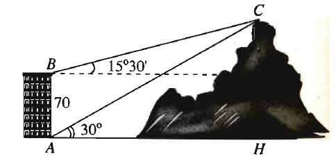
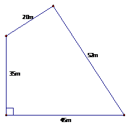

Môn Toán - Lớp 10
Câu 1. Câu 1: Hình bình hành có một cạnh là 4 hai đường chéo là 6 và 8. Tính độ dài cạnh kề với cạnh có độ dài bằng 4
Câu 2. Câu 2: Tam giác ABC có \(BC = \sqrt{5}\), \(AC = 3\) và \(\cot C = -2\). Tính cạnh AB
Câu 3. Câu 3: Tính bán kính đường tròn ngoại tiếp tam giác ABC biết AB = 10 và \(\tan(A+B) = -\frac{1}{3}\).
Câu 4. Câu 4: Tính bán kính đường tròn ngoại tiếp tam giác ABC biết AB =12 và \(\cot(A+B) = \frac{1}{3}\).
Câu 5. Câu 5: Tìm chu vi tam giác ABC, biết rằng AB = 6 và \(2 \sin A = 3 \sin B = 4 \sin C\).
Câu 6. Câu 6: Cho tam giác ABC có \(AB = AC = 2BC = a\). Biết \(R.r = \frac{1}{2}\) với R,r lần lượt là bán kính đường tròn ngoại tiếp và nội tiếp tam giác ABC. Tính a.
Câu 7. Câu 7: Cho tam giác ABC biết độ dài ba cạnh BC, CA, AB lần lượt là a, b, c và thỏa mãn hệ thức \(b(b^2 -a^2) = c(c^2 - a^2)\) với \(b\ne c\). Khi đó, góc BAC bằng
Câu 8. Câu 8: Tam giác ABC có tổng hai góc B và C bằng \(135^\circ\) và độ dài cạnh BC bằng \(a\). Tính bán kính đường tròn ngoại tiếp tam giác.
Câu 9. Câu 9: Tam giác ABC có \(\hat{A}=105^\circ\), \(\hat{B}=45^\circ\), AC=10. Tính cạnh AB.
Câu 10. Câu 10: Cho tam giác ABC nội tiếp đường tròn bán kính R, AB = R, \(AC = R\sqrt{2}\). Tính góc A biết \(\hat{A}\) là góc tù.
Câu 11. Câu 11: Tam giác ABC có AB=16cm, BC = 20cm và diện tích là \(80cm^2\). Tính số đo góc B của tam giác ABC.
Câu 12. Câu 12: Cho tam giác ABC vuông cân tại A và \(AB = a\sqrt{2}\). Tính bán kính đường tròn nội tiếp tam giác ABC.
Câu 13. Câu 1: Cho tam giác ABC có AB = 3, AC = 2, \(\hat{A} = 60^\circ\). Trên cạnh BC lấy điểm M nằm giữa B và C
Câu 14. Câu 2: Cho tam giác ABC có \(AC =b=7\); \(AB = c =5\); \(\cos A = \frac{3}{5}\).
Câu 15. Câu 3: Cho tam giác ABC có AB = 2; AC = 3; BC = 4 .
Câu 16. Câu 4: Cho tam giác ABC cân tại A có \(\hat{C}=30^\circ\), BC = 3 cm .
Câu 17. Câu 1: Tam giác ABC có BC = 12, CA = 9, AB = 6. Trên cạnh BC lấy điểm M sao cho BM = 4. Tính độ dài đoạn thẳng AM . (kết quả làm tròn đến hàng phần trăm)
Câu 18. Câu 2: Cho \(\triangle ABC\) có AB = 2 ; AC = 3 ; A = 60°. Tính độ dài đường phân giác trong góc A của tam giác ABC. (kết quả làm tròn đến hàng phần trăm)
Câu 20. Câu 4: Từ hai vị trí A và B của một tòa nhà, người ta quan sát đỉnh C của ngọn núi. Biết rằng độ cao AB = 70m, phương nhìn AC tạo với phương nằm ngang góc \(30^\circ\), phương nhìn BC tạo với phương nằm ngang góc \(15^\circ30'\). Ngọn núi đó có độ cao so với mặt đất? (kết quả làm tròn đến hàng đơn vị).
Câu 21. Câu 5: Cho hình chữ nhật ABCD có AB = 8, AD = 6. Gọi P là trung điểm cạnh CD và Q là điểm thuộc cạnh BC sao cho \(QC = 2QB\). Tính bán kính đường tròn ngoại tiếp tam giác APQ. (kết quả làm tròn đến hàng phần mười)
Câu 22. Một bác nông dân có mảnh vườn hình tứ giác có một góc vuông với kích thước 4 cạnh là 35m,45m,52m,20m (như hình vẽ). Hãy tính diện tích của mảnh vườn đó (kết quả làm tròn đến hàng đơn vị).
